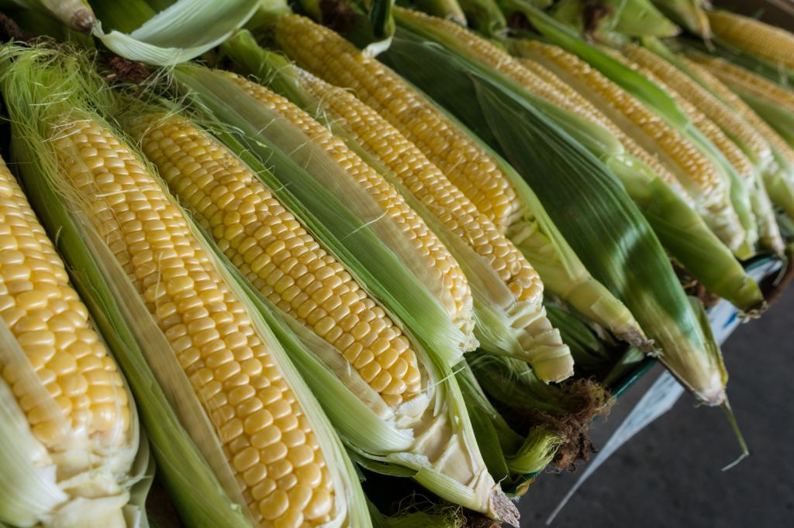

Genetically modified crops may be the future of many developing nations.
The merits of genetic engineering, of course, have been hotly debated over the past few years. With the advent of new technologies and techniques, genetic modification has become the new frontier in biological development: a frontier that, like all others, has its fair share of fears and concerns. However, skepticism regarding the practice of genetic engineering largely overlooks the needs of developing nations-, especially with regards to genetically modified crops.
The domesticated corn we know today, much of which is genetically modified
Genetic modification, of course, is not an entirely new concept. Humans have engaged in artificial selection since the dawn of agriculture, selecting and breeding animals and plants with “desirable” traits: leading to the domesticated breeds commonly known today. But the idea of direct genetic engineering via gene splicing came about in 1973, by Herbert Boyer and Stanley Cohen.
The two scientists were able to transfer antibiotic resistance from one strain of bacteria to another, opening the floodgates for innovations in the field of agriculture and beyond. And with the 1987 discovery of CRISPR-Cas9, a revolutionary technique for modifying genome sequences, the science of genetic modification truly came into its own- though not without concern. Genetically engineered (GE) crops, in particular, have seen strong resistance from critics.
Many of these concerns are targeted at or around concerns for health and the environment. Critics say that not enough is known about the ramifications of modifying genome sequences to safely cultivate GE crops. However, not only have no adverse effects been found to consuming GE food, but the practice carries several economic and sustainability benefits as well: especially for those living in developing countries.

Many farmers, like the one above, see income increases due to genetically modified crops
One of the main draws regarding GE crops is increased yield rates via certain genetic alterations. These reduce the potential for insect damage and increase robustness, thus cutting down on pesticide expenditure. Millions of tons of agricultural products are produced each year, while significantly reducing the amount of land required to grow the crops. This, along with decreased pesticide usage, maintains biodiversity.
Along with environmental benefits, increased yields lead to greater economic growth. Farmers who invested in GE crops saw an income increase of 102 US dollars per hectare as of 2016, according to Joan Conrow of Cornell University’s Alliance for Science. The corresponding global income benefits were at an astounding $18 billion: thus contributing significantly to the economies of developing nations. Compared to farmers in developed nations, farmers in developing countries saw a significantly higher return on their investments; the former making $2.70 for every dollar invested, while the latter made around $5 per dollar investment.
Such a profit margin would explain why the leaders in GE technology tend to be developing nations. 53% of the world’s GE crops were grown by around 19 developing nations, including Bangladesh, Chile, Brazil, and others. In a very real sense, such nations rely on their acreage of GM crops to compete with industrialised nations and for the well-being of their citizens; the aforementioned yield increases are essential to feeding a growing population.
An increasing population means more people need to be fed
Even in 2001, there were concerns over feeding the exponentially increasing global population. In March of the same year, a United Nations estimate projected the population in 2050 as being around a whopping 9.3 billion people. In 2015, that estimate rose to 9.7 billion. Such a demand for food must be met, especially in population powerhouses like India and China. Genetically engineered crops, incidentally, make up a large portion of agricultural acreage in such countries. India’s GE acreage alone encompasses around 11 million hectares and consistently ranks in the top five countries for GE crop acreage.
Soybean, one of the most heavily consumed genetically modified foods today
Not only do GE crops meet the rising demand for food with higher yields; they also drastically increase income for farmers, and especially those in undeveloped nations. Adapting to a changing world with an ever-increasing population may be just another reason as to why GE crops have caught on so fast; they might just be the future for many in developing countries.